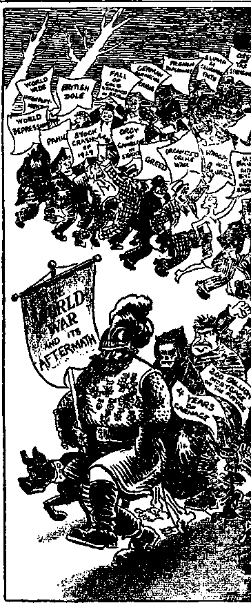

A JOURNAL OF FACT HOPE AND COURAGE
lll!lllllilllilllllllllllll!IIIIIIIIIIIIIIIIIIIIIIIIIIIIIIIIIIIHIIIIIII
in this issue
SYRIA THE BLIND NOT SO SLIPPERY "MAY FLOWERS” IRISH FREE STATE PREPARING FOR WORLD WAR ALL MAY OBSERVE SABBATH iiiiiiiiitiiiiiiiiiiiiiiiiiiiiiiiiiiiimiiiiiiiiiiiiiiniiiiiiiiiiiiiiii every other WEDNESDAY five cents a copy one dollar a year Canada & Foreign 1.25
Vol. XIII - No. 330
May 11, 1932
CONTENTS
LABOR AND ECONOMICS
Ponca City's Profitable Plant . 500
Too Many Clerks at Washington 5U2 Industrial Autocracy like
Dangers of Knowing Too Much 502
llawley-Snioot Tariff in Operation 530
SOCIAL AND EDUC tTIONAL
Many Invations on Homes or
“'May Flowers’’
Six People Identify Wrong Ulan
Senator Johnson Hits the Nail . 502
The Ones That Want Peace . . 502
FINANCE—COMMERCE—TRANSPORTATION
New Cars in Storage in Philadelphia
Big Business in Canada .... 501
POLITICAL—DOMESTIC AND FOREIGN
Getting Beady for Another
Harking Back to Diego Diva . 497
An Irish Free State Correction 497
Irish Free State in a Crisis . . 497
Columb’it S/Hctator and War
Trotsky's Opinion of Fraiiee . 500
Mellon Charges Dropped . . . 503
AGRICULTURE AND HUSBANDRY
What a Florida Orange Crower Got
Brazil's Expensia e Covite Destruction
SCIENCE AND INVENTION
■World's Greatest Organ . . . 503
HOME AND HEALTH
Not So Slippery Elm Bark . . 493
Andrew Mellon Is the Ansaa er 495
Threats of False Arrest . . . 505
TRAVEL AND MISCELLANY
Syria—the Bridge to Three Continents......4S3
Wine Served Free in Hotels . . 495
Incomes of Wilhelm and Alfonso 501
Germany's Former Royalties . . 503
May Travel on Instalments . . 502
RELIGION AND PHILOSOPHY
Billy’ Sunday Lame on Constitution.......499
Atlanta Church Loses Pastor . 500
What Happened in Ocean Grove 504
The Radio Witness 'Work . . . 506
All M ay Observe Sabbath Without Hindrance .... 507
1‘uMislicd euerj other Wednesday at 117 Adams Street, Brooklyn, N. 1'., U. S. A, by ' WOOVWOKTH, KNORR & MARTIN
Copa/ t net's and Proprietors Addios: J17 Adams tilt'ict, JiiooUpn, A. 1., 7 . S. L, CLAYTON J. WO<>1>\\ ORTH . . Editor ROBERT J. MARTIN .. Business Manager NATHAN 11. KNURR . . Secretary and Treasurer
1’i\e Cents a Copy— .51.00 a Year Make Remitiances to THE GOLDEA AGE Notice to Subf.cnbe)^: For jour own safety, remit by postal or express inonc’, order. We do not, as a rule, '•end acknowledgment of a lonewal or a new subsurlpimn. Renewal blank (carrying notice of expiration) is sent with the journal one mmith before the subscription expires. Change of address, when requested, may be expected to appear on address label wHhln one month.
Published abo in Finnish, German, Japanese, Norwegian, Polish, Sv.eih-h.
Offices in Other Countries
Bi it hit............34 Craven Terrace, London, W. 2, England
Canadian...........40 Trwin Avenue, Toronto 5, Ontario, Canada
A ii'l, ala stan ...... 7 Beresford Rd., Strathtield, N. S. W., Australia South 1 ft tian.........0 Lelie Street, Cape Town, Smth Afrii a
Entered as sccond-ckns matter at Brooklyn, N, Y., under the Act of March 0, 1S79.
Volume XIII Brooklyn, N. Y., Wednesday, May 11, 1932 Number 330
Syria — the Bridge to Three Continents
IF ONE wishes to go by land from Europe to
Africa, his journey will take him through Syria; if he wishes to go from Africa to Asia, his journey will take him through Syria; and if he wishes to go from Europe to Asia, the oldest and most direct route is through Syria, and down the Euphrates valley.
It was to get control of the Syrian route to the east that Germany embarked upon her enterprise that wrecked the world. It was to prevent any further aspirations in that direction that Britain and the Allies broke the Turkish Empire to bits, mandating Palestine and Iraq to Britain and Syria to the French.
Ancient Assyria ruled from the Black sea to the Mediterranean. The name became abridged from Assyria to Syria, and finally became limited in application to the more western part of these regions. Geographically, Palestine is a part of Syria. In its narrowest parts, the inhabitable area is only about sixty miles wide, and the total area of the country is only GO,000 square miles, or about the size of the state of Georgia.
Syria is a mountainous region, with Mount Hermon visible from almost all parts of the country and forming a valuable landmark for the guidance of caravans and aviators. The ancient name of Syria was Aram. Damascus was the capital of the ancient Aramaic kingdom and is believed to be the most ancient city in the world.
The mountains retain their snows until late in summer. They condense the vapors from the Mediterranean sea and give to both Syria and Palestine their fertility. There are few perennial streams in Syria; the rain is quickly absorbed by the stony ground.
The so-called “Syrian Desert” is really a fertile steppe, and when artificially watered yields a most luxuriant produce. In the rainy season the Syrian “desert” produces a rich crop of grasses and flowering herbs, affording most valuable pasture. Syria is one of the fruit centers of the world. What still remains of the historic cedars of Lebanon is now found only at a solitary spot.
Throughout the country there is an unwritten law that a shepherd may lead his flock where nothing is planted. The sheep are so well trained that they know they are not to touch a bite of growing grain. Such a thing as a fence is unheard of, yet a shepherd will lead his flock beside a wheat field and not a sheep or goat will pay any attention to it, but will continue to browse away where it looks as if they would get nothing to eat.
The first railway line of 54 miles from Jaffa to Jerusalem was opened in 1892. About 1400 miles were in operation in 1914, with electric street cars in Damascus and Beirut.
From a distance Damascus presents the appearance of one of the most beautiful cities in the world. It is said that when Mohammed gazed down upon the city in the center of its green gardens, he said, “When I die, I shall go to heaven; so why should I now go to Damascus
The best time to visit Damascus is in the month of May, at which time the plain in which the city stands is covered with a brilliant carpet of wild flowers and fruit trees of every variety and in great profusion are in full foliage.
There is no other city where customs have changed so little. The ‘street called Straight’, associated with the experiences of the Apostle Paul, is now called “Suk-et-Tawileh”, or “Long Bazaar". The city was often besieged, pillaged and burned, in Bible times and since.
It was the home of the noted Syrian warrior, Saladin. When Kaiser Wilhelm of Germany visited Damascus in 1899 he laid on Saladin's tomb a bronze wreath bearing the inscription ‘‘From one great emperor to another”. The kaiser is now sawing wood at Doorn and is the laughingstock of the world. (1 eneral Allenby removed the kaiser's wreath when he captured the city from the Turks, in 1918.
4S3
The most important building in Damascus was originally a Roman temple. Subsequently it became the Church of St. John, and was supposed to contain the head of John the Baptist. Although the church was turned into a mosque in the year 1705, it still has an inscription over the main door which reads, “Thy kingdom, O Christ, is an everlasting kingdom, and Thy dominion endureth throughout all generations.”
Damascus steel has for centuries had the reputation of carrying the best edge and being the toughest steel known. Some of the famous Damascus blades and swords and daggers can still be picked up.
When the Turkish Empire was broken up the Syrians explicitly requested that the mandate for their country should not be given to France ; but the League of Nations disregarded tlioir wishes, because, years before the World War was fought, France and England had agreed between them that the thing should happen that did happen, that is, that Britain should have Palestine and Iraq and that France should have Syria.
Maybe you cannot understand how two nations can agree to divide between them the property of a third nation, but that is because yin are honest. Among “statesmen’’ a little thing like that is just as easy as it was for the kidnapers to steal the Lindbergh baby.
The first years of the French mandate wore troublous years. In the fall of 1925 there was a rebellion in which the French ruined without warning a city that was a seat of culture a thousand years before the Parisii laid the foundation for the city of Paris.
Damascus was bombarded for 43 hours. This bombardment reduced the center of the city to utter ruin and destroyed the most famous examples of Arab domestic architecture and early decoration, together with almost a thousand civilian men, women and children of the district.
Every visitor to Syria should visit the ruins at Baalbek. Here one may see the largest stone ever quarried. It is 70 feet long, 14 feet wide, and 12 feet thick. It is estimated that it weighs more than a thousand tons and would take the combined strength of 40,000 men to move it one-half an inch per hour.
Tn the walls of the temple at Baalbek are three stones, each of which is more than 60 feet long, 13 feet with1, and 12 feet thick. These wore brought from the quarry a mile away. How this was done and how they were lifted 20 feet from the ground and placed in their present perches in the wall, no human wisdom can explain.
The roof of the Temple of the Sun at Baalbek was supported by 54 Corinthian columns 22 feet in circumference and as tall as an eight-story building, standing on end. Six of these columns are standing today. Inscriptions at Baalbek attribute the building of this fortress of Baal to giants sent by Nimrod “the mighty hunter before the Lord".
Among the strange sights at the Temple of Baal are 200 granite columns, each 3 feet in diameter and 27 feet long, that were brought from far up the River Nile in Egypt, the only place where granite of this kind has been found. How these great columns were conveyed from Egypt to Baalbek is a problem no scholar has been able to solve.
The only logical explanation of the structures at Baalbek is that they are the work of the giants before the flood, and that their angelic fathers provided them with means unknown to us, of nullifying the laws of gravitation.
’The traditions of the Arabs are that Adam and Eve lived at Baalbek; that it was near this place that Cain killed Abel; that it was here that Cain built the first city; it was here that the Tower of Babel was built; and it was here that Noah lived and died.
Beirut is the chief port of Syria. Looking toward this city from the heights of Mount Lebanon, it presents a vonderful picture with the great Mediterranean sea sparkling behind it in the sun. It was down the mountainsides of Lebanon that the cedars were skidded to the sea, after vhich they vere made into rafts and floated to Joppa, and then taken overland to Jerusalem for Solomon’s Temple.
Hamah, 110 miles northeast of Damascus, is known as the city of 100 aqueducts. Huge wheels, 60 to 90 feet high, carry water from the riverbed to the orchards and gardens above.
Syria has its pests. Each town and village is infested with masterless dogs and cats. Locusts are the plague of the farmers, often devouring whole crops. The locusts are eaten only by the Bedouins.
The inhabitants all speak Arabic, but present a conglomeration of races. Greeks, Romans and European crusaders have all blended with the anciejit Semitic stock to produce the Syrians of today.
Practically all the inhabitants of the coast of Syria in and about Alexandretta are afflicted with the “Aleppo Button” or the “Baghdad Date Mark”, each the result of a boil that always lasts a year before healing. Europeans often contract this disease after a stay of only a few days.
Discovering that they were not wanted in Syria, and finding the governing of the turbulent mandated country a less pleasant and more expensive job than they had anticipated, the French have discussed giving up their Syrian mandate, and the Italians have offered to take it in their place; but little as the Syrians love the French, they love the Italians still less. What they prefer is to be let alone to govern themselves as they see fit.
When General Gouraud was high commissioner in Syria, he was called on by a committee of Syrians who asked for three things: first, agriculture; second, religion; and third, justice. He is alleged to have said to them, “Get rid of your goats and you'll have agriculture; get rid of your priests and you'll have religion; and get rid of your judges and you’ll have justice.”
It is claimed that one of Syria's greatest misfortunes is the religious antagonisms which prevail and it is further claimed that in some parts the golden calf of Baal is still actually worshiped as it was in the days of Moses.
Without a doubt this is the most conservative section of the ■world, and also one of the most “religious”. In Damascus it is difficult to get away from the sight of kneeling figures. At noon the Mohammedan shopkeeper draws a net over the front of his shop and spends the noon hour on his knees in prayer. When he gets up from liis knees he is ready and willing to cheat the eye teeth out of anybody, regardless of whether that one has the same habits of life as he or not.
The latest riots in Syria were the anti-Italian riots of a year ago, and the more recent election riots, when stones were thrown freely in Damascus and Aleppo. The country is expecting to have a republican form of government after the French leave.
In the vicinity of Beirut and Aleppo are several princes claiming to be heirs of the late Sultan Abdul Hamid and hoping for the restoration to them of the ownership of 47 villages which they maintain formerly belonged to the sultan. The old Moslem sheiks are said to fear the liberal ideas of the young Moslem politicians more than they do the soldiers of “Christian” France or Italy.
Though Syria was one of the first of the nations of earth to use the alphabet, and although within its borders there was recently found the world's oldest dictionary, yet today only 20 percent of the people can read and write and not over 25 percent of the boys and 6 percent of the girls of primary school age are actually attending schools. Many of the educational institutions of the country are maintained by foreign missions.
One of the most picturesque peoples of Syria, and one of the most difficult people in the world to handle unless they are treated with kindness, are the Druses, described as truth-telling, valorous, and the handsomest race in Syria.
They took a dislike to a certain French governor, and when they complained of him to his superior officer they were betrayed by a clerical, with the result that some 40,000 of the fiercest and bravest warriors of Mohammedanism arose in rebellion. They were defeated with terrible bloodshed.
When the first of the Druses were slain, the French committed the indecency of parading through Damascus on camel back the bodies of the twenty-five slain men and later exposing them in the public square.
The Druses claim to have at one time lived in China. They have peculiar religious beliefs and customs known only to themselves. Since the French came into control of the country, they have been in revolt against them on five different occasions.
Some of the Syrians admit that since the French have had charge of their country there has been a marked development in all branches of agriculture. Roads have been built facilitating the moving of crops to the cities, and other roads are under construction. Much valuable work has been done in checking up boundaries and titles. A silk congress was held; and the French have shown the Syrians how to encourage and build up a tourist business.
Syrians Want Their Liberty
Nevertheless, the Syrians are weary of French militarism and cruelty. In the town of Swedea a cat strayed away from the home of the governor, and notice was published in the town that if it was not returned within twenty-four hours, every household in town would be lined one gold pound.
Under French rule in Syria from 1919 to 1932 the public expenditures (in francs) for education were 0,300,000. During the same period the public expenditures for maintenance of troops were 1,782,000,000 francs, which is 283 times the amount for education.
A bridge called Jisr Addamour was built by the Turks for £8,000. When a French engineer-repaired this bridge he charged for repairing it more than live and one-half times as much as what the bridge cost new.
When a French officer in the custom house of Beirut became a millionaire through bribery, the case against him was dismissed and he was allowed to go back to France with all of his money, all of it collected dishonestly.
When the Druses were being subjugated in 1926, it was the French custom on entering a village to shoot all the men they could see. The French soldiers and their friends returned from these raids loaded with loot, jewelry, silk scarfs, clothes, rugs and cattle.
In one case, because one French officer was attacked, the French authorities destroyed by bomb five villages; the women of the village were outraged, and 6,500 sheep were confiscated as indemnity. All together, 80 villages were bombarded.
Not only have the Syrians had to submit to these outrages, but they have actually had to pay a portion of the cost of perpetrating them; for Article II of the text of the mandate for Syria provides, “Nothing shall preclude Syria and Lebanon from contributing to the cost of the maintenance of the forces of the mandatory stationed in the territory.” One would think it bad enough to be robbed and murdered without having one’s heirs taxed to help pay the cost of committing the depredations.
In the educational projects which the French have put under way they have naturally sought to put the Arabian language in the background and the French language to the fore, and that is one reason why the Arabs want them to leave Syria.
Essay on the Blind By J. Lowell Bito (New Jersey)
HUMAN interest, apathetic as it might have been, was the dynamic force that propelled the movement of elevating the blind from a state of animalistic classification to a state of human rank; for it has been only a few centuries since, in the more primitive communities of England, blind people were ostracized from society and forced to roam the forests like wild beasts.
This action was prompted by the popular belief that the blind were the instruments of diabolic agents and were destined to create evil. The interest of the enlightened society was aroused by this peculiar belief and soon some wild blind were, literally, captured for scientific study.
After some time spent in investigation, science found that, although sightless persons maintained the keenness of their other faculties, they still possessed eccentricities which were compensations for sight rather than the misinterpretation of deviltry. This pronouncement served to further stimulate human interest, which in turn influenced the continuance of greater investigations.
The findings of science in time dispelled the false impression hitherto held by the cruder society, and soon enough people were interested in the blind to found a movement for the purpose of raising them to a higher station in society.
The first notable step of this movement was the establishing of schools where the blind were given some form of instruction. That in these instructions, the preparation for some petty occupation was the predominating element seems to be a logical deduction. However, records show that very little was accomplished in these early years, and that the only force which kept the movement alive was the persistency of human interest.
In fact, throughout the various centuries this movement is characterized by an insignificant amount of accomplishment, but an abundant flow of enthusiasm. Probably this zeal was nurtured by the fact that some of the blind had learned vocations enabling self-support, and the public cherished the hope that all the blind could be raised from the parasitic class.
In fact, in any movement resulting in great achievement, it is this plenitude of belief and absolutism of confidence that forms the very essence of the movement’s early existence. Thus it is that even the present workers for the blind are able to so stoically face their many disappointments.
The early educators of the blind fervently adhered to the theory that the amount of development of any group of people was always proportionate to the amount of education received by that group. It was for this reason that they sought to increase the amount of instruction available to their students.
Undoubtedly a major step in this direction would be to devise a system whereby the blind would be able to read and write. If this could be accomplished, then it would be possible to fashion the system of education after the methods employed by sighted people.
At first this seemed a fanciful idea; but if the development of the blind was to be continued, it was requisite to devise some system of reading and writing.
It is not of immediate value to discuss the evolution of the system finally adopted, but more important to familiarize ourselves with the method by which it is accomplished. Lacking the sense of sight, of course, it was necessary to utilize the sense of touch.
Thus the letters are formed by tiny projections, or dots, punched through a heavy sheet of paper. The relative position and number of these dots indicate the desired letter. For example, the system is founded on a group of six dots •• and by eliminating certain dots from this group the various letters of the alphabet are formed.
For instance, if from this group •• we eliminate the left center dot '• the letter Y is formed. However, should we eliminate both center dots '* the letter X would be formed. For more detailed explanation, below is given an illustration of the entire alphabet.
abode fghi jkimnopqr s t u v w x y
A considerable variety of systems have been used in creating tangible letters, but a solicitude for the convenience of the blind led to the general adoption of the above-illustrated method under the name of the Braille System.
In order for the blind to create these letters when writing, two kinds of apparatus have been invented: the Braille Writer and the Slate and Stylus. The Braille Writer is a machine similar in structure to a typewriter, but because of its ponderous size and delicate mechanism it is rarely used. The Slate and Stylus, on the other hand, are used by all blind who write the tangible letter system.
The slate is merely two strips of metal between which is locked a sheet of paper. The lower strip is lined with perforations arranged in groups of six •• •• •• H . The upper strip is lined with cells which indicate the position of the lower perforations.
Thus when the point of the stylus is placed in the cell, it is unable to enter the lower perforation because of the paper covering them. However, a slight pressure will cause the stylus to pierce the paper, thus forming a tangible dot. The blind writer, by selecting the perforations, forms those dots whose positions indicate the letter he wishes to create.
The stylus we mention is simply a pointed instrument very much resembling a miniature awl. The almost incredulous fact about this system is that the blind are able to write with the rapidity that we exhibit with our pencils.
After the advent of reading and writing by the blind, the building of institutions for their education was somewhat accelerated. At present there are in this country alone over four hundred institutions designed for the purpose of educating those encumbered by defective vision. In addition to these seats of learning, throughout the larger cities there are hundreds of individual classes maintained for the same purpose.
Sightless children, after they have reached school age, are sent by their communities to these institutions. These children are immediately taught the Braille System of reading and writing; and thus they are able to read the textbooks reprinted for them from the inkprint editions.
From here on the system of education is similar to the one found in the orthodox public school, with the exception, perhaps, that a greater stress is placed on subjects of vocational import.
Approximately twenty to thirty percent of these children graduate from high school; and of this group from two to ten percent enter universities. The most remarkable fact is that from ninety-five to ninety-eight percent of university students succeed in graduating, the others being eliminated because of financial inabilities.
There are thousands of books printed in Braille for the blind student, together with weekly, monthly, and quarterly periodicals. However, the most egregious blunder is that the managers of the printing presses make it a vow to reprint most of the modern fiction stories instead of attempting to effect a compromise between the number of novels and textbooks printed. It is justly argued that if textbooks of the best creation were more plentiful in Braille, higher education would iind a more facilitated access to the blind student. Sensible of this truth, small organizations have long endeavored to remedy this inefficiency. These small factions, however, because of pecuniary difficulties, have made very little progress.
In spite of this handicap, these factions still contest their problems with no diminution of zeal. However, until the managers of printing presses for the blind are aroused from their lethargy, the blind student will remain the martyr to their deficiency.
At present the only book-distributing centers are a mere handful of libraries scattered throughout the nation. The work done by these organizations is highly laudable. The task of distributing books is accomplished by mailing to the enlisted reader that book for which he had expressed a desire to read.
Through an act of Congress all reading matter for the blind passes through the mail without cost. By a general suffrage of the blind this service was proven to be the most beneficial rendered to them.
Society has endeavored to make provisions for all classes of blind: the children are sent to homes and institutions; the middle-aged are provided with special vocations; the impotent and old-aged are taken care of by philanthropic organizations. By this formula society has endeavored to mitigate the burden which would otherwise have fallen upon the shoulders of individual families.
However, “errare humanum cst,” and society is human. It is fitting, therefore, that we discuss some of the provisions that we have made which have not been stamped with high degrees of success.
It is the middle-aged blind who create the most momentous problems for society to solve. These persons have reached the age where education has been limited either by their intellectual levels or else they are so impervious to scholastic influence that further administration is futile.
Most of these people, although in indigent circumstances, follow vocations wffiich enable them to live with extreme frugality. That society assist in the adjustment of their lives is highly imperative. We all realize that their difficulty centers around the inadequacy of their occupation to yield substantial support.
But they cannot be made to realize the advantages of versatility in handicraft; nor can they be made desirous of a higher standard of living. Therefore our financial assistance to individuals is merely of temporary benefit.
Organizations have already attacked this problem from another angle. They have formulated plans to assist this class of blind, not individually, but as a group. For this purpose they have established community centers where these blind may congregate and thus be brought into direct contact with the organization's influence.
If this influence can encourage them to raise their standard of living, to expand their scope of vision beyond the term of self, and thus establish a closer relationship between their world and ours, surely this is more justification for financial expenditure than relief to individuals.
Such organizations as “The Community Workers for the Hebrew Blind”, “The Lighthouse for the Blind,” and “The New Jersey Commission for the Blind”, are devoting the major part of their resources in the establishing of community centers.
The principal functions to which these organizations have pledged adherence are: (1) To open now fields of vocation for the blind; (2) to facilitate the acquiring of new ideals and ideas; (3) to instill into the blind an enthusiasm for greater accomplishment: (4) to assist the blind in fusing themselves with the rest of the world.
The blind are enticed to the community centers by special social functions arranged in their behalf. This makes it possible for the members of the benofactory organization to mingle with them and learn of their difficulties and problems.
The organization then attempts to interest the blind in some of their courses of instruction, such as classes in music, weaving, broom-making, doll-dressing, etc. The blind are given opportunities to attend musical and dramatic entertainments of the best order gratis.
The organization sponsors conferences of newspaper sellers, insurance salesmen, piano tuners, etc. These meetings materially assist the blind by acquiring now ideas. In short, the different organizations have various methods, all tending to annihilate the barrier of distinction which immures the blind from the rest of civilization.
Theoretically we find it not difficult to concede that it is to the betterment of any individual if his environment be such as to influence him to project his life beyond the compounds of his own epidermis. Also, if one can profit by the knowledge of the experiences of others, steps ought to be taken to acquire such knowledge.
And apparently these are the objectives of the community centers for the blind. How far they have gone astray from their goal is difficult to ascertain, since the evils of any endeavor are always more accentuated than its merits. It is not our desire, however, to stress the virtues of this undertaking, and far less is it our wish to emphasize its defects.
However, in any constructive analytical study it is infinitely more valuable to discuss the had points of a system, rather than to consign ourselves to excessive laud. With this idea as our justification we shall devote a few paragraphs to a discussion of the pernicious effects resulting from blind colonization as we find it in the community centers.
In any society where there is established an association between the opposite sexes (as in the community centers) there inevitably arises some form of love intrigue. Thus it is that in these blind colonies it is not rare to have a male and a female become connubially linked. Consequently, eugenic examination not being necessary in respect to a marriage, the progeny of these unions are, as a rule, afflicted with blindness.
The most nauseating spectacle that this writer has ever behold was a family of three blind feeling their way along a New York city street. The father was a lank, thin, tubercular individual who shuffled along in a somewhat stooped posture which enabled him to describe a greater circumference with his cane.
His wife clung to his arm. She was a waxen-featured, scrawny woman, whose stunted, frail body and protruding cheekbones were made the more sickly by the atrophy of her eye-sockets. These two alone caused one to shudder, without the additional sight of their child.
He was an eyeless, emaciated youngster, whose pipestem legs were so badly warped that it forced him to waddle as his mother dragged him along. A thin stream of blood trickled from his chin, probably the result of an unfortunate collision.
The most uncouth feature about this child, however, was the peculiar canine symmetry of liis head. In truth, this fact was so striking that it led one’s thoughts to his possible progenitors.
The three of them were clad in clothes indicative of (‘xtreme penury. This scene, sad to relate, was made the subject of drollery by some of the observers, but others were moved to the very soul.
Upon inquiry this marriage proved to be the result of an acquaintanceship made possible by one of the blind community centers. Such is the irony which blemishes the good intentions of these organizations. It is unfortunate, however, that most of them are slow in correcting this horrid enormity.
We would not be treating this phase of our subject very judiciously if we were to create the impression that all community centers for the blind facilitate this class of marital relationship. In fact, of late there is a growing tendency by the more progressive societies to discourage such practices.
Leading in this movement is the managing board of The Lighthouse for the Blind. This organization not only forbids the association of blind of opposite sexes, but endeavors to establish acquaintances between sighted females and sightless males, and vice versa. For this purpose they arrange weekly dances to which are invited various sororities or fraternities, as the needs of the occasion dictate.
In addition, this organization maintains a splendid department of vocational guidance which aims to place the blind in such positions where contact with the sighted world is best assured.
In order to eradicate some of the wrong that has been done, this society maintains a sort of creche where infants are given the best medical and maternal attention to aid them in a fairer start in life.
That the Lighthouse has attained the acme of success in ironing out the evils of blind colonization is, of course, not implied. However, we can state with certainty that they have made more progress than the other community centers above mentioned.
(Note—This author had the privilege on several occasions to attend these functions, and to study the peculiar psychic reactions prevalent in this assembly. It is possible that, if sufficient interest is manifested, we shall devote an entire article to this subject.)
There are still more potent agencies which assist in minimizing the evils of copulation resulting from interblind marriages. These agencies are scattered throughout the length and breadth of every civilized nation. They have ostensibly espoused the cause of discouraging the fecundity of that class of people who are the victims of hereditary disease.
For this purpose these societies maintain a corps of obstetricians and other physicians skilled in the science of gynecology. True it may be, they whisper, that their practice is illicit; but, they continue, it is not motivated by selfish interest, since the ultimate beneficiary is the human race.
Thus, believing in this sophism, they spread the knowledge of birth control; they assist in the distribution of antifecundous drugs; they advocate not infertility and chastity, but contraception. In short, they attempt to efface hereditary disease from mankind by creating a marriage blanc.
Confidentially a member of this movement once remarked that his organization alone destroys more than fifty thousand embryos per annum. If this is accomplished by a single organization, we shudder when estimating the total number of lives which are wiped out by the combined efforts of all these societies.
Nevertheless, if we are to take their ostensible motive at its face value, they are, scientifically, justified in teaching contraception to this class of unfortunates. But the pivotal issue arises, Is there some other means by which hereditary disease can be checked, without infanticide?
Those who are inured to this practice will reply in the negative; while those of us who dearly love humanity will offer a solution on this plan: Let the money that is being spent to improve the chicanery of this supine society be added to the funds maintained for the purpose of raising and developing children.
If this noble movement could be made to assume greater proportions, in time there would be a human race whose offspring could not be of the undesired class. And again the human race would be the ultimate beneficiary.
However, it is perfectly obvious that the purport of these societies is not as humanitarian as they avow. Their interest centers solely in fl-nancial rewards. Their field of endeavor is not limited to any certain groups of people, but includes all classes of society. To advertise their work, they publish magazines featuring nudity and the efficacy of their products.
The people connected with this movement do not admit that their action is lured by dollars and cents, but claim that their affiliation is prompted by a desire to wipe out hereditary disease. It is surprising, however, to note the short length of time that it takes their members to rise from poverty to opulence.
In spite of the fact that many blind families are subject to the influence of these societies, interblind marriages still greatly aggravate the burden of human society. For, be these unions fertile or sterile, matrimony increases their problems so many fold that they are unable to handle them without assistance.
This statement becomes more obvious when we realize the many problems that confront even a sighted person when leaving behind celibacy. Thus the burdens of interblind marriages become the burden of society; and it is this truth that reflects so sadly upon the Community Center System which made possible its miserable origin. In fact, this reflection is so ghastly that even condign praise of this system bears semblance to mockery and ridicule.
There is still another demoralizing aspect of blind colonization that is of sufficient magnitude to enter this brief discussion. This is a tendency to integrate all blind into a single group with a common set of ideals and ambitions.
Nature accomplishes somewhat the same task by the method expressed in the dictum, “Birds of a feather flock together.” However, in the community center system the corollary of this axiom is totally disregarded.
As a result, when the dissimilar classes of blind are fused together, there arises a conflicting standard of ideals and ambitions. Those with high ambitions spurn their fellows who are mediocre in their standards; while those possessing insignificant and low ambitions militate against the other classes. This situation simply discords the harmony of the entire colony. In fact, no group of people could remain a single unit under these conditions unless there is effected an amalgamation.
The community workers endeavor to solve this problem by establishing a standard of ideals that is neither too high nor too low. In short, it is an encouragement of that ambition which yields self-support without too greatly taxing the powers of the individual. This is really a compromise between mendicancy and intellectual endeavors. Thus we find that community centers are flooded with newspaper dealers, broom-makers, etc.
The effect of this is that those blind who aspire to become lawyers or writers find it much easier to earn a living by selling newspapers, and, strengthened by the encouragement of the community center, they lower their ambitions. The very few who cannot condescend stop associating with the colony, and thus the community center loses their elevating influence.
Consequently the colony becomes a veritable incubator of chair-caners, doll-dressers, etc., etc. This is another unfavorable condition for which a remedy has not yet been found.
In the final analysis it seems that the methods advocated by such distinguished educators as Dr. Burritt, head of the Overbrook School for the Blind, Philadelphia, and Mr. Van Cleve, head of the New York Institute for the Blind, New York city, are probably the most efficacious in promoting the welfare of the blind.
These men are of the class whose minds are emancipated from greed incited by pecuniary interest, and their endeavors are born of a sincerity unsullied. Their leading tenet is to so efficiently educate the blind that they may become without difficulty a part of the higher strata of society. Moreover, they do not believe in acting as a force to raise the blind, but rather to arouse an innate desire in the sightless person to raise himself.
To more definitely grasp this theory let us cite an illustration: In the process of drawing water from a well, we observe that the force generated by our hand causes the pail to rise. But as soon as this force ceases the bucket plunges downward. However, if the force were in the bucket itself, then it could regulate its own ascension, and our force would simply assist.
The present work being done for the blind is similar to this crude example: the blind are the codicil, and the workers strive to raise them. When the workers pause, the blind sink down to the level from which they have just arisen, and the workers must begin anew. But if the sightless were taught to raise themselves, then the remaining task would be very picayune by comparison.
The work done to attain this end will not be marked by rapidity in its progress; but work accomplished is irretrievable ground gained. In this system the blind profit, while the educators are kept subordinate. It is probably for this reason that such a method does not meet with more approbation.
However, if blind are to develop, they must develop themselves. If they wish to create the impression that intrinsically they are not parasites, then they themselves must become strong and virile individuals. It is only after this fashion that they can obliterate the stigma of mendicancy which is generally associated with their affliction.
[The Watch Tower Bible & Tract Society maintains a department for the blind at 1210 Spear St., Logansport, Ind., and, in addition to The Watchtower for the blind, which is published every other week, has arranged for the following publications to be made available in Revised Braille: The Harp of God, Deliverance, Creation, Reconciliation, Where Are the Dead? Comfort for the People, A Desirable Government, and The Kingdom, the Hope of the World. These books and booklets are distributed in libraries and sent to individuals in the United States, Australia, South Africa, New Zealand, India, England, Scotland and Canada. The radio has found a number of the blind interested, and these have obtained the literature. We are glad indeed that the Society is able to do something in their behalf, and that those who are hungry for the truth are getting a knowledge of the Kingdom.—Ed.]
What a Florida Orange Grower Got
A LITTLE while ago everybody was going to go to Florida and grow oranges and get rich. Some went and are growing the oranges. Are they getting rich? The following is a true copy of a statement which one of them recently received for growing 100 cases of fruit and turning them over to the packer. All he was charged for his work wTas $14.29. The grower is glad and thankful that he was not charged anything for four of the items on the list. The packing charge of $1.15 a crate seems a plenty. Many of the oranges that are now coming into the New York market come in little sacks of an open mesh that we cannot believe cost more than 10c each, and we wonder what becomes of the other $1.05.
Lot No. 1008
Sale No. 898
AMERICAN FRUIT GROWERS INC.
ORLANDO, FLA.
E. B. Walling Weirsdale, Fla.
Car No. 35636
Packed at Weirsdale Shipped 12-2-31
12-12-31
TANGERINES
|
22'1-2 Blue Goose Suncrest |
60.55 142.95 47.15 | ||
|
57 20'1 |
” ” Goldens -2 ” ” Russets | ||
|
100 |
Freight |
90.55 |
250.65 |
|
Refrigeration Demurrage Auction Charges |
4.39 | ||
|
Cartage and Labor Clearing House Charges |
1.00 | ||
|
A. F. G. Selling |
20.00 |
115.94 | |
|
Net Proceeds |
134.71 | ||
Packing 115.00
Picking and Hauling 20.00
Freight to Packing House
Marking and Brand Advertising
Precooling 10.00
Coloring 4.00 149.00
DEFICIT 14.29
N. Y. Auction.
Not So Slippery Elm Bark By A. L. Green (England)
I READ with interest the article appearing in The Golden Age No. 318 entitled “Slippery, Slippery, Slippery Elm Bark-’, by Dr. H. AL Shelton. While agreeing with the basis of his article, that health cannot be restored without removing or correcting the cause of disease, yet it seems that he slipped upon the Slippery Elm: for there is another side to the question.
I do not claim to be steeped in medical matters, anti am glad I am not, but there appears to be some measure of balance needed when dealing with the subject of health. To group the osteopath, chiropractor, naturopath, electrotherapist and herbalist together with evangelists, Christian Science, monkey glands and witchcraft seems to me a hit far-fetched. And because a man does not practice or teach the doctrines of the school of healing he is professing to represent, that does not alter the truth or error of those doctrines.
As regards those who seek for “remedies” in order to continue their careless ways, no doubt they just suit the doctors and the doctors just suit them, so we will leave them to get on with it. But there are others who do value health and are seeking to improve the same, especially those fully devoted to Jehovah, and it is this class we will consider.
In the above-mentioned article we are given several items that are discounted as remedies, but nothing to take their place except the vague keeping “of the laws of life". We could make a good guess as to what is implied, but how many could keep these laws ? We need plenty of fresh air, but as, maybe, we work in a factory basement, we cannot get it; we need plenty of fruit and vegetables, but cannot afford all we should like; wo need restful sleep, but the neighbor's cockerel thinks otherwise; we should have plenty of exercise (the boss sees we get that), but should not work at high speed unless we can have; a two months’ sea voyage. We have to work at high speed or get the sack, and cannot afford a sea voyage anyhow. Then there are others who unavoidably make a bad start in life through having parents who think more of dancing, pictures and beer than of caring for children. In other words, we must remember that the Devil's organization is still here, and since it is hopeless to try to reform it, and things will not be satisfactory until God's kingdom is in full sway, we must in the meantime make the best of it.
While the Devil has been foisting as many fads as possible upon the human race, he has also been ridiculing everything likely to be of benefit, and it is for us to endeavor to sort out the muddle. Uis method of procedure seems to be to establish quack systems of healing veneered with some truth and to foster the belief in magical properties of true remedies to belittle their real value. Also, while there are a number of people whose living depends upon the existence of disease, and we cannot guarantee they are all honest, we have to tread warily.
Now as regards “remedies” and “cures”. Words are often used out of place, but we understand what is meant. In fact, the face value of a word is not a reliable guide; the accepted meaning is its real meaning. The illustration is given of a person's burning his hand and then wrapping it in salves and ointments to “heal” it. When the word “heal” is used, surely no one really thinks that the now skin that in time forms on the burnt hand really evolved from the salves and ointments. Obviously what is meant is that the ointment soothed and gave the body freer scope to heal the hand.
Tako an extreme case of a man rescued from drowning. His vitality has been brought so low that his body is unable to cope with the obstacles, and if we preached him a sermon on the laws of life and waited for his corpuscles to muster to the fight, we should wait until doomsday. So what do we do? We artificially help him to overcome the obstacles by applying artificial respiration. The same might be said of massage to help a sick person to make a more speedy recovery, even if the cause of the sickness was through careless living. And the osteopaths themselves claim “that the human body is a perfect machine and that all the remedies necessary to health exist within it”, and “the manipulative technique of the osteopath is employed to control and regulate the flow of the blood and healing fluids of the body, so that Hie body itself is enabled to resist and repel the invasion of disease-laden germs and effect its own core in its ovn way”.—The New Healing, by Wilfred A. Streeter, pages 34 and 76.
Now coming to herbs. A sure way of casting doubt on anything, without the aid of reason, is to class it with something objectionable. “Give a dog a bad name and the name will kill it.” Link herbs up with magic and the trick is done.
The Creator has given us a great variety of
plant life, which for convenience of reference we have classified. We call one class “trees”, another “shrubs”, and those plants that die to the root every year we call “herbs”. There is nothing spooky about that! Just as some plants and their fruits contain elements needed by our bodies, and others are unfit for consumption, so we find some herbs containing elements needed by us, and others unsuitable for use. Because some witch of the Dark Ages used a poisonous herb to do away with someone, that does not make any difference to those herbs that are not poisonous. Or, because a medieval country yokel thought that St.-John’s-wort kept evil spirits away as well as being good for lung trouble, the superstition does not alter the latter- fact.
Elderberries have been known for centuries as a means of curing a cold, or, as already explained, of assisting the body to more speedily get rid of the cold. (Although the elder is not an herb, it comes within the domain of an herbalist and is called an “herb” in the looser sense of the word.) Are we going to believe that the sweating evident after drinking elderberry syrup is the result of demonism or imagination, or shall we believe that it is caused by viburnic acid in the berry? How many herb scoffers use parsley to garnish their dishes? That is simply an herb.
I know an elderly woman who went to the hospital suffering from cancer and later was sent out as hopeless (only a fortnight to live) with a pain near her spine preventing her from sleeping. Soon after taking the herbal remedy mentioned in The Golden Age No. 245 (one ounce each of violet leaves, yellow dock and red clover simmered in three pints of water for twenty minutes) the pain went and she is now in normal health, in spite of the fact that our wise men are still searching for a remedy. If ‘‘testimonials of benefits derived from remedies mean nothing”, is this woman cured, or is she actually dead and only thinks she is alive ? The doctor who attended her was puzzled at the recovery, but has now evidently dismissed the matter from his mind.
Someone will rightly say that if this woman had lived properly she would not have had cancer. But since we have all been born while Satan's organization is running the world's affairs, and from birth have been surrounded by a crowd of hypocrites, one telling us that cigarettes are good for slimming; an aluminum firm boosting its rubbishy saucepans; the doctors waylaying us with serum squirters; Punch & Judy politicians speaking in the future tense; the shopkeeper recommending something he knows nothing about; and the pious manequin paraders urging us to reserve a seat in heaven with our last shilling, it takes some time to unlearn a great deal of what we learned and change our habits as far as environment and pocket will permit. (The Golden Age has been a great help to this end.) But this does not mean that we throw overboard everything practiced by our forefathers. If we are not blessed with a good constitution a great deal of damage may in the meantime have been done, and so, while reforming our ways, we seek means of assisting our bodies to return to normal; for example, massage, muscle and bone adjustments, electrical treatment, and herbs that are rich in the elements (in organic form) that are deficient in our bodies. We cannot expect one method of treatment to cure every complaint.
The simplicity of herbs savors of the Creator’s method of provision, and this may be one reason why they are rejected, because they do not give the medical profession scope to show its own “ability” with, of course, its high fees.
Why do we read in God’s Word the expression “the leaves of the tree were for the healing of the nations” (Bev. 22: 2) if it is not for the fact that the principle is borne out in a minor degree in nature? We might also ask, If aids to health are unnecessary, but sufferers should “reform their modes of living”, how long would it take a leper or one suffering from cancer or deafness to return to normal by this reformation only?
Why do I see the neighbors’ eats nibbling grass? Even they cannot keep fit under our wonderful civilization, and we shall find that after doing all we are able to live properly we shall still occasionally feel unwell, and then be thankful there are means of healing, or shall we say, assisting, our bodies.
In any case, with whatever health and strength we have, let us use it in the greatest work on earth, in the service of Jehovah.
[Since we published Dr. Shelton’s iconoclastic article on “Slippery, Slippery, Slippery Elm Bark” we have received several communications from those who have tried Mrs. Levens’ suggestions regarding slippery elm, as published in The Golden Age No. 318, and found themselves thereby benefited. Dr. Shelton may be a little bit savage, but he has good ideas. Let every man be fully persuaded in his own mind.—Ed.\
Andrew Mellon Is the Answer
A FRIEND of ours, a landscape architect in California, becoming interested in the evidence we have offered as to the dangers of cooking in aluminum utensils, wrote the United States Department of Agriculture, Bureau of Home Economics, Washington, D. C., to find out what they knew on the subject. Louise Stanley, chief of the Bureau, came back with the following highly illuminative ( ?) epistle:
UNITED STATES DEPARTMENT OF AGRICULTURE
BUREAU OF HOME ECONOMICS WASHINGTON, D. C.
February 1G, 1932.
Mr. Malcolm Rolls, Box 21, Escondido, California. Dear Mr. Rolls :
Your letter of February first addressed to the Department of Agriculture has just been referred to this bureau.
We have made no investigations on the subject of aluminum as a material for cooking utensils, but I am glad to inclose a list of references which you may wish to consult. From a study of the scientific literature, we can find no basis for the statement’s being made that aluminum ware is dangerous to health.
Your letter is being referred to the Bureau of Plant Industry for answer to your other questions.
Sincerely yours, Louise Stanley, Chief. Inclosure.
And then our friend Mr. Rolls comes back at ns and waxes inquisitive and sarcastic and wants to know of m.v, “Why does the Bureau of Home Economics not make investigations on the subject?” Andrew Mellon is the answer. Despite the five years that this subject was studied by the Federal Trade Commission, and the voluminous and instructive report of the same by Edward M. Averill, examiner for the Federal Trade Commission, in Docket No. 540, the Bureau of Home Economics, which is just the department that should know all about this important subject, admitted when Ruth Van Deman was its Associate in Publications and information (!) that it “has not conducted any experiments on aluminum ware”; and it plainly does not now know any more about this thing than it did then. And we may add that it will take mighty good care that it never does.
What is the reason? The answer is that it is Andrew Mellon. Does anybody suppose that the ladies in the Bureau of Home Economics are going to run the risk of losing their jobs just because a few hundred thousand people are being slain every year as a result of plating their insides with aluminum? Not a little bit. Mr. Mellon has a lot of power in Washington.
Mr. Mellon will supply all the information that is to be given out on this aluminum question. lie has a big research department at Pittsburgh in connection with the aluminum trust of which he is the almost sole owner, and it is the business of this research department to find Tacts’ that are favorable to the sale of more cooking utensils. And they will find those Tacts’ or Mr. Mellon will have to find scientists (Ha! ha!) who will.
The man who can pronounce the word “scientist” in these days without grinning is the man who has had an operation performed on his lips which makes it impossible for him to twist them into a smile. Numerous of these “scientists” testified to the truth about this aluminum business before the Federal Trade Commission, and when we merely gave their names, without saying what they said, they wrote us from every corner of the earth beseeching, begging, demanding, threatening and denying, and insisting that we say no more. They are employed by universities and have wives and babies, and, as Mr. Mellon’s friends put up the cash for their salaries, they do not want to be on the street looking for work, any more than the ladies of the Bureau of Home Economics. When we reproduced some of their testimony they shut up like oysters.
Wine Served Free in Hotels
WINE is served free with meals in numerous hotels in the latitude of New York and Philadelphia. It is cheaper than water in some parts, and much cheaper than kerosene everywhere. The vats of every farmer are overflowing. But before you rush out and buy your ticket, we hasten to explain that while the latitude is the same there is a difference of G5° in the longitude. The place where the wine is so cheap is in Portugal. By the way, Portugal had one three-foot snow this past winter, and that is a record snow for Portugal.
Getting Ready for Another World War
THE last World War was not enough, yet the writer Emil Ludwig, in the Saturday Evening Post reminds us that a parade of the dead, ten abreast, with a new rank every two seconds, would take 46 days to pass a given spot, and the incidental dead were five times as many. The cost of the war was $338,000,000,000; in four years Europe lost all the savings accumulated in a century.
Suppose the war now under way in Manchuria spreads so as to engulf the rest of the world. Here is what Marshal Foch says will happen:
Poison-gas bombs will spread deadly fumes which will penetrate any mask and produce death in a few minutes. Phosphorus bombs, impossible to extinguish, will burn the flesh to the bone within half a minute. Hundreds of tanks, each one able to shoot a thousand deadly bullets a minute, machine guns like automatic rifles which, in the hands of 1,000,000 men, will shoot 100,000,000 bullets a minute, will also be raging, and the heavens above will be darkened by a thousand airplanes pouring a rain of horror on the earth. Behind the lines, cities and villages will crumble in ruins under the destructive fire of the latest artillery. In the next war there will be no such thing as the front and the rear. The whole nation will find itself on the firing line.
According to Winston Churchill, the laboratories in all the great countries are busily studying systematic ways of infecting humans and animals in enemy territory, of spreading mildew to kill the crops, anthrax to kill the cattle, and bacilli to destroy the inhabitants.
America believes in phosphorus guns. They were tried in the latter part of the World War, and the burns inflicted were so deep that the flesh had to be pulled off the bones of living men.
Twelve large bombs of the latest form of Lewisite gas (discovered in Chicago) would be enough to blot out all life in either Chicago or Berlin. New
Y o r k could be wiped out by a gas attack from submarines.
There is a mixture of poisonous and phosphorus gas which will penetrate any protective device, and a m u s t a r d gas which will stick t o one’s shoes and will make him carry death wherever he goes.
Today there are more than a thousand kinds of poison gas. Diphenyl chloral arsenic is so deadly that, mixed with air in proportion of 1 to 10,000,000, the victim is forced to throw off his gas mask, whereupon his end follows in the greatest tortures conceivable.
Harking Back to Diego Deza
THE BIG
Reproduced by Courtesy
IN OUR last issue we only skimmed the surface of the Wickersham report. We have said nothing about the Alabama case where a man was kept in the electric chair eight days and nights and whipped with a nine-pound lash; nothing about the Arkansas torture chair where the officers turned off the current when the pain threatened death; nothing about the Baltimore case where a prisoner was slain outright when a police officer blackjacked him brutally without provocation in the presence of fourteen witnesses; nothing about the Jersey City case where James Cullom had his jaw fractured by a policeman right in the courthouse itself; noth-
ing about the Paterson case where a prisoner was beaten and kicked by officers while in process of being questioned at the
of the Chicago Tribune
desk ; nothing about the Memphis case where an innocent man, inquiring the whereabouts o f a friend w a s locked u p t w o days without any charge and quest i o n e d under blinding lights by the voices of invisible men ; and nothing about the Pitts-b u r gh case where a man was strapped to the cooling-board in the morgue and placed between bodies of two victims, while pins were run under his finger nails and into his body.
As a sample of mental torture: one police official had in hand several neatly dressed c o n li -deuce men. He commanded his men to round up several Negroes, syphilitic, the dirtiest that could be found. He locked these in the cell with the confidence men. In an hour he thus forced a "confession”.
The Wickersham report points out that the third degree hereinbefore described as prevalent nearly all over the United States is chiefly used against the poor and uninfluential. Gangsters are immune, because the police are afraid of retaliation. Many third-degree assaults may be laid to tips from stool pigeons whose living depends entirely on getting convictions.
An Irish Free State Correction
By Joseph H. O’Beirne
TN The Golden Aye for January 6, 1932, on page 201, you state that church and state are combined in the Irish Free State. Not so; on the contrary, it is expressedly provided in the treaty consummated with England, providing for the establishment of the Irish Free State, that no state religion of any kind will ever be established in the Irish territory. All religions are equal before the law in this section of Ireland. So much for your error of commission.
Your error of omission is equally serious. The one outstanding example of a combined church-state today is England, of which fact you make no mention. The Church of England is the state church of England. Its archbishops and bishops have seats in the House of Lords, and so are legislators of Great Britain, help to make the laws for the people of that country and, to a lesser extent, for the whole British Empire.
There is more freedom of religion now in the Irish Free State than there ever was in England. It may further interest you to know that the Sinn Fein which brought about the establishment of the present Free State was organized, led, by a Protestant, Arthur Griffith, who afterwards became president of the state; that Sinn Fein was bitterly opposed by the papacy at the request of England; that the Roman church excommunicated any “priest” who identified himself with the movement; that despite the opposition of Rome, the movement survived and conquered; that a very large proportion of the leaders of the movement establishing the present Free State were Protestants, including Griffith, Chikiers, Barton, Casement, and many others; and lastly, that religious intolerance and bigotry is much less prevalent in the Irish Free State than in the United States of America.
Irish Free State in a Crisis
By C. E. Guiver (Ireland)
WHEN the Irish Free State came into existence, in 1922, it was a newly born state with great possibilities. The constitution of the state was looked upon as one of the most demo
(■ratio in the world. It had a good start and has < njoyed a measure of prosperity unsurpassed by any in Europe.
The government of the Irish Free State is now passing into law a measure which alters completely the constitution. It is of a very drastic nature and may have far-reaching consequences. It gives evidence that the panicky state of mind affecting the leading statesmen of the world is here in the Irish Free State and fulfils the scripture, “men’s hearts failing them for fear, and for looking after those things which are coming on the earth.”
Those who are the mouthpieces of the government of the Saorstat Eireann, the Irish parliament, say that a number of societies have been active during the last two years, whose avowed object is the overthrow of the Irish Free State government by force and by revolutionary means to destroy the present combination of church-state rule. Prominent among these organizations is placed the Irish Republican Army, responsible to none save its own chiefs. Another is Cumann-na-mBan, said to have taken part in a campaign of terrorization and the breakdown of the judicial system. Communistic groups are linked with them, such as ‘'The Irish Friends of Soviet Russia”, “The Irish Communist Party,” “The Irish Working Farmers Committee,” and others.
In justification of the measure introduced there is cited a number of acts of violence in the country during the last ten months, prominent among which are the following cases:
On January 30, 1931, Patrick Carroll was murdered by armed men at Captain’s Lane, Cruinlin. He was a member of the I. R. A., but was discovered to have given information to the police.
On March 21, Supt. Curtin was killed by armed men at Tipperary as lie was returning home from night duty. lie had conducted a local persecution for illegal drilling. On July 20, John Ryan of Tipperary was taken from his house at night by armed men. He was shot and his body left by the roadside. He had made statements to the police about illegal drilling.
It has been impossible to bring anyone to justice for these crimes. Juries fear to convict a person, because of the consequences to them.
Another scene which occurred recently: Men of the order of the “Black Preceptory” of the Orange movement attempted to hold their animal meeting at Cootehill, Co. Cavan. This was attributed to the Irish Republican Army of Co. Cavan, that they held up parties going to the meeting both by road and rail. The meeting was not held.
The Orange movement is associated with Protestants and specially connected with the north. The six northern counties, being predominatingly Protestant, refused to have any part in forming an Irish Free State, twenty-six counties comprising the new state, whose population has only seven percent Protestants in it. The north against the south is based purely on religious differences; that is, Protestant against Catholic. Reprisals took place in the northern counties as a result of the stopping of the Orange meeting in Co. Cavan, Irish Free State.
On the occasion of a gathering of Catholics in Portadown, Co. Armagh, a very Protestant town of the north, riotous scenes occurred. In the outrageous scenes which took place an illustration was given by Protestants of the scripture, “Love your enemies, bless them that curse you, do good to them that hate you, and pray for them which despitefully use you.” These religious differences keep apart north from south even more effectively than the customs barrier which crosses the country from east to west.
Reverting to the change that has been made in the Irish Free State constitution, President Cosgrave introduced the bill and outlined its provisions. It authorizes the setting up of special military tribunals, composed of five army officers not below the rank of commandant. At every sitting three of them, and no more, shall be present, and constitute this tribunal for such sitting. The tribunal is authorized to pass the death sentence, if necessary, and no appeal shall lie from any of its orders, conviction or sentences, but the Executive Council may pardon convicted persons and remit the punishment imposed by tribunal.
Civic guards, that is, the police, are given powers to search, photograph, fingerprint and arrest without a warrant any person under suspicion. After thirty-six hours of detention an inspector will declare the person’s release or charge before a tribunal.
The offenses scheduled in an appendix for trial by the tribunal are:
Any offense declared to be treason, felony or misdemeanor.
Anv offense under the Juries (Protection) Act, 1929.
Using or carrying firearms without a certificate therefor.
Seditious libel.
Any offense under any section of the new article of the constitution.
Any offense certified by an executive minister as done, in his opinion, with the object of impairing or impeding the machinery of government or the administration of justice.
Possession of documents of an illegal organization render the individual liable to a fine of £50 or imprisonment not exceeding three months. It shall not be lawful to print, publish, distribute, sell or offer or expose for sale any book, newspaper, magazine or other document issued on behalf of an unlawful association.
The tribunal will have power on application of the garda (police) to declare any book or other document to be seditious, after which such document may be seized.
Of course this act is not being passed (so far as men are concerned) to hurt the Christian, yet some of Jehovah’s witnesses in this country naturally wonder how this law will affect them. During the last two years up to ten of Jehovah’s witnesses have placed thousands of books and booklets containing the greatest message on earth in a land that is Rome’s most faithful supporter, and it would not surprise them if an attempt were made to stop their witness.
President Cosgrave, in concluding his speech in the Dail, said: “Let us not delude ourselves into believing that the new doctrines could never subvert the tradition of this country. Subversive movements are usually carried out by a relatively small minority, and there is no very sound reason to be convinced that large sections of our people would not, like other peoples, succumb to Communistic teachings when allowed complete freedom of utterance. The church and state are the only bulwarks against chaos. The present movement aims at the destruction of both.”
The Irish people are very hospitable. An Irish family will share a meal with a stranger and be friendly towards him, but politics or religion will fire the blood of an Irishman and he becomes a fighter. It has been said that the Irishman is always “agin the government”, and that seems true whether the government be British or one of his own making. The only way to satisfy the people of this land is to give them Jehovah’s government. It will please all nations, kindreds and tongues.
Billy Sunday Lame on the Constitution
Billy Sunday is reported as having said that “a special law should be passed to make the kidnapers of the Lindbergh baby face a firing squad when they are caught. Mr. and Mrs. Lindbergh should be permitted to select the firing squad. If I were a member of it I’d guarantee there'd be no blanks in my gun”.
We can well appreciate why Billy, not being a Christian, and not knowing that he should ‘fret not himself because of evildoers’ (Psalm 37:1), would naturally wish to participate in a lynching directed against the fiends incarnate that made off with the Lindbergh child. lie would shoot to kill, if he had the chance. There are millions who feel the same way.
However, it is not the best way. The Lindberghs chose a much better way. They gladly offered to submit to the great injustice and give up a fortune for the return of their child unharmed. Billy Sunday should know that the United States Constitution, Article I, Section 10, provides that no ex post facto law may be passed. That is to say, every crime must be tried under the law in force at the time the crime was committed.
We are glad that is in the Constitution, for with people like Billy wanting to run amuck with a gun, and wanting to get laws passed so that he could shoot to kill, for this crime or that, he might take the notion to want to get a law passed killing everybody that disagreed with him. That would be good for the undertakers, but bad on the insurance companies. Billy should eat less meat and more fruits and vegetables, and should read the Bible and the Constitution.
Many Invasions of Homes of the Wealthy
IN THESE days New York is witnessing the invasion of many of the homes of the wealthy. Admission is gained under all sorts of pretexts. In a recent instance three men, claiming to be bootleggers, gained admission to an apartment and made away with gems of the value of $349,000.
“May Flowers”
THE times being hard, an Atlanta church sought to conserve its means somewhat by cutting the pastor’s salary. Reverend H. J. Blakeley, the pastor, discouraged the idea by becoming heated with choler and at just the right or wrong time drawing a revolver. His idea went over big, but one of the brethren went for the police, and now the church is without any pastor, for Reverend Blakeley has pulled out for parts unknown. Maybe by this time he is hard at work somewhere making an honest living.
Columbia Spectator and the War Department rpiH' SPECTATOR, daily paper published by the student body of Columbia University, resented having the War Department try to tell them how to run their paper and said some things worth repeating:
Not only has the War Department taken upon itself the work of educating youth in military science, but it lias gone beyond that and tries to develop patriotism of the worst Ku Klux type. We can only suggest that the less the War Department tries to muscle in on fields not its own, the better young America will like it. No one, unless it be a few Legionnaires and those numerous generals and admirals who pass their time making silly speeches, believes that the War Department and the Navy Department are, supposed to guide our thinking. It takes upon itself far more than it has a legal right to assume, and most of the legal rights under which it now functions were created during periods of hysteria.
PONCA CITY, Oklahoma, has its own cooperatively-owned and city-managed electric light and water plant. Results have been so very satisfactory that last year every man, woman and child of Ponca City’s 16,000 population received a rebate of over $10 from the- electric plant, and $2.50 from the water plant. In two more years the city will be without any city tax of any kind, shape or description. The leading banker of Ponca City has common sense. He laughed at the efforts made by public utility propagandists to show that the earnings of the Ponca City plant could not be as good as they actually are, and added that without the lighting plant the town would go broke. Why is it that these trust men are so eager to prove that nobody can do electrical work and be honest ? Anyway, it isn’t so.
Oenator Frazier, chairman of the Committee on Indian Affairs, says of the oppression of the Apaches on the Mescalero Reservation that in 1930 the per capita expenditure by the Indian Bureau for every Indian living on the reservation was $306. He says of this huge and unnecessary expenditure: “If government in all its branches, national and local, were supported as lavishly, on a per capita basis, as is the Indian agency on the Mescalero Reservation, the tax fund would total more than $36,000,000,000, or more than a third of the aggregate national income.” Tn other words, a horde of political bums are living on the fat of the land on money that belongs to the Apache Indians.
IN ITS convention in the Euclid Avenue Baptist Church, of Cleveland, the pastors of Ohio, in a resolution referring to the refusal of citizenship to Dr. Macintosh of the faculty of YTale University made the statement that they “solemnly refuse to acknowledge the obligation which the Supreme Court declares to be binding upon its (United States) citizens. We have not promised, expressly or tacitly, to accept an act of Congress as the final interpretation of the will of G'od, and we will not do so”.
Those are brave words, if they mean what they say, and they are better said now than not at all. Those men, apparently, have some misgivings that all is not as it should be in Satan’s empire and that maybe, after all, it is not as closely identified with God’s kingdom as they had supposed.
Trotsky’s Opinion of France
TNTERVIEWED by a reporter of the New J- York Times, Leon Trotsky, co-author of the Soviet Republic, but now in exile, gave the following interesting opinion of French logic: “It is true that in Baris they consider the Soviet proposal of universal disarmament a proof of the belligerent intentions of Moscow, and on the other hand the refusal of France to take steps toward disarmament they regard as an expression of her peaceful intentions. Following the same logic the French official press considers the Japanese invasion of China an act of civilization, the Chinese resistance a barbarous act. Burglars, according to this logic, are not those who break into other people’s houses, but those who defend their own.”
oou
WHEN the kaiser stepped across the Holland border into safety he had a personal income of $2,595,000 a year, and when Alfonso aided the Spanish people by removing to Paris he had a personal income of $980,000. Both monarchs, when they left, did as any bootlegger would do: lugged off all they could. The present incomes of the rulers of Great Britain, Italy, Belgium, Rumania, Bulgaria, Yugoslavia, Sweden, Norway, Denmark and Holland total about $5,000,000 a year merely for the kings and queens, and they are said to be feeling the pinch, even at that.
ON OCTOBER 18,1931, in some forty storage warehouses in Philadelphia there were 18,000 new automobiles in stock that nobody could buy. The dealers had invested 35 percent in cash in these cars, and the banks had put up 1he other 65 percent. Naturally, the 65 percent that the banks put up was money that was deposited with them by the people who cannot afford to buy the cars. Question: If the dealers are unable to sell these $21,000,000 worth of cars, whose money is it that will be lost? You know the answer.
IT NOW appears that when Americans buy Bolivian bonds they are buying war munitions made in Great Britain. They may not know it, but it appears that that is the way it works out. Dillon, Read & Company float in America the bonds of Bolivia. The small bank works the bonds off on its customers. The money goes to Bolivia, and thence it goes to the great British armament and trouble-making concerns of Vickers Limited, Great Britain. If Bolivia gets licked in the war that follows, who is it that loses his money? The answer is so plain that ‘he may run who reads’.
A BRITISH prisoner wrote to his committing magistrate: “Since May, 1924,1 have had only nine months’ liberty. It is not because I will not work, but because I cannot get work. Oh, please help me to get some sort of employment when I am released. Help me to keep out of prison, where crime, vice and insanity are bred and born. Help me to be an honest citizen.” The young man was but 27 years of age. The magistrate was much touched, said he did not believe the young man had had a fail’ chance, and would see to it that he be given employment when he is released.
SOME twenty-five years ago a toll bridge was erected in the state of West Virginia at a cost of $42,000. The profits on the bridge have been $60,000 a year. The time came when the state wanted to buy the bridge, and the owners refused to sell for less than $325,000. One of the greatest grafts in the country is the toll bridge over the Delaware river at Delaware, N. J. It is on the direct route of the Lackawanna Trail, one of the most heavily traveled automobile routes to the West out of New York city, and every car that goes over the bridge must pay 25c in each direction.
THE Illinois National Guard have received pamphlets of something over a hundred pages each entitled “Emergency Plans for Domestic Disturbances”. The book explains that under no circumstances will blank ammunition be issued to troops of the Illinois National Guard, and that when they fire they are not to fire over the heads of rioters, but right at them. Instructions are given for the use of machine guns, tear gas, hand and rifle grenades, white prosphoras, rifle, grenades and buckshot cartridges for shotguns. Wonder why Illinois is interested in such things just now.
Bert Huffman, writing in the New Democracy, says of Big Business in Canada:
“Today, 168 years since Canada became a British colony, we find less than ten million people in the entire vast expanse, and more exceedingly rich railroad magnates, exceedingly rich grain-handling magnates, exceedingly rich timber magnates, coal operators, bank presidents, pulpwood exploiters and land corporations, than in any other country on earth with a similar population; and in the opposite side of the balance, we find 550,000 unemployed men and women, vast schemes of charity feebly muddling with hunger, want and miseries, and towns and cities frantic with the menacing problem of the present winter. Yet Canada started with a magnificent, a priceless heritage; half a continent teeming with untouched riches. ’ ’
TN THE year 1800 the Baited States needed a grand total o£ 54 clerks to attend to its business, and the government cost per capita was about $2 a year. Now we have a grand total of 800,000 clerks and a government cost per capita of about $40. All who think we have a better government now than in 1800, signify it by raising the right hand.
FEELING the pinch for business, and noticing that everything else is sold on installments, the Cunard Steamship Company has worked out a plan by which one may travel on the installment plan. The down payment is 25 percent of the cost of the trip; the balance is paid through Morris Plan banks. By this arrangement a trip to Europe may be arranged for $34 down and less than $10 per month.
AMERICAN actors and actresses just now are getting a lot of fun imitating some of the peculiar forms of the English language spoken in the British Isles. Hitherto the talkies sent out from Hollywood have been understandable in every part of the world, for everybody can understand the English tongue as it is spoken in America. The new dialects will be hard to understand anywhere.
Professor Jerome Davis of Yale University recently said:
We have an industrial autocracy in the United States now just as real as the autocracy exercised by the late czar over his subjects. The only difference is not so much in kind, but in degree. The fact is that Americans haven’t begun yet to realize what it is all about—that an industrial revolution or transformation has changed this nation into an urbanized one, a mechanized one, where fewer than 200 corporations out of 200,000 control half the wealth of the country. The result is that we've lost our liberty and freedom of action without realizing that we have drifted into a state where power is predominant. Freedom and liberty are meaningless if a man has no job. Freedom today is to some extent freedom to starve. The average American is contentedly indifferent to this fact. It is only when he is unemployed that he appreciates what this means, that he and his fellows have drifted silently into the loss of their freedom without realizing that this has occurred.
TT IS easy to make a mistake. Six people positively identified a Nebraska man as a bank robber and he was given fifteen years. After two years another man, caught in robbing another bank, confessed the crime for which the Nebraska man had been locked up. The State should liberally compensate the innocent man whose home was broken up, and who because o£ his conviction did not see his baby until it was eighteen months old.
ly/TUCH as we may loathe the governors of California for their lack of courage and honesty in the Mooney case, we have to admit that California has produced in Senator Johnson a man who dares to tell the truth. He recently said in the United States Senate: “All that Big Business has to do is to come out on the floor and whisper—and we act.” That is not a fact of which one can be very proud, but it is good that somebody has the courage to admit it, anyway.
A SUBSCRIBER near Boissevain, Va., where thirty-eight men recently lost their lives in a mine explosion, writes of conditions:
They have officers there to keep the public from seeing too much. One miner from West Virginia went to some of the officials a while back and reported the danger on account of gas accumulated in the mine. He got fired for his pains. We hear they have two men arrested and in jail for talking too much about the danger of the mines. The Big Men are running things here to suit themselves.
THE ones that want peace are the common people, who are the sufferers from war. At the Armament Conference there were presented 8,000,000 petitions for universal disarmament. The Manchester Guardian says of these: “Indeed there was something almost horrifying in the contrast between the dark, submerged mass of the petitioners and the statesmen delegated to the Conference, whose deficient interest in peace and disarmament has become only too plain.” A labor delegate boldly demanded disarmament under the threat of revolution; an American student made a particularly favorable impression.
THE German courts, which are extremely reactionary, have repeatedly ruled that the sums which the various states have agreed to pay their several royal families may not be changed, even in cases where it has been stipulated that the sums shall be hereditary. In other words, it looks all right to the German courts that the poor German working people should continue to pay forever for the support of the royal families that were their curse and that brought Germany where she is today.
rpiIE first item we pick up is one showing that Britain has nearly three million unemployed. The next is that the British Government has set aside £100,000 to invest in robots, as it has been found by experiment that the great bulk of the work done by clerks in the various government offices can be done more expeditiously and cheaply by mechanical means. Another advantage is that the children of the robots are not always crying for food and clothing and education and everything else we humans crave. The displaced clerks will be nicely cared for, after Armageddon.
OF THE three presidents that have served under Mr. Mellon, Mr. Hoover is the most fortunate, for he has succeeded in shifting to London what may be perhaps best referred to as America’s Great Embarrassment. Everybody in America knows that Andrew Alelion, contrary to law, was “concerned or interested in carrying on the business of trade or commerce’’. He is one of the world’s wealthiest men, and much of that wealth came to him through his control of munitions companies during the World War. Under Section 243 of the Code of Laws of the United States Air. Alellon should have been impeached. Had he been found guilty, the language of the statute would have made it necessary to fine him $3,000, which amount, as he is reputed to be a billionaire, he could doubtless have paid. It would also have required that he “be removed from office and forever thereafter be incapable of holding any office under the United States”. In view of the fact that Air. Alellon has been made ambassador to Great Britain and is no longer secretary of the treasury, the Patman charges against him have been dropped.
rpiIE Hawley-Smoot tariff, America’s most foolish legislation on the tariff subject, has reduced exports from the United States to Canada from 856 million dollars a year to 584 million dollars a year, and has reduced imports into the United States from Canada from 560 million dollars a year to 364 million dollars a year. It has driven Canada to the West Indies for its fruits and made certain that Canadian wheat will have preference in British markets. It has cost America her best customer.
rpiIE world’s greatest organ has just been installed in the auditorium of the Alunicipal Convention Hall, Atlantic City. This hall, 487'4" long, 283'8" wide and with center arches 136'6" high, seats 41,000 people at one time. The new organ weighs 120 tons and contains 32,706 pipes and speaking units. Its largest wood pipe measures 59'10" in length and has a square top which is 2'6", speaking a 64' pitch. The largest metal pipe has a length of 34'8" and has a diameter of 2'; it is made of unannealed American zinc 5/16" thick, speaking a 32' pitch. The length of wire used in the installation of this organ, if placed end to end, would be sufficient to girdle the earth twice.
T7HVE great thinkers, among them James Rus-J- sell Lowell and President James Madison, are between them responsible for the following statements: “A man’s judgment is no better than his information. The public is not short on intelligence; but it is chronically short on facts. Popular government without popular information as an aid in maintaining it is but a prologue to a farce or a tragedy. The tyranny of uninformed public opinion, the oppression of popular’ prejudice, is far more dangerous than that of the autocrat. The true danger to popular forms of government begins when public opinion ceases, because the people are incompetent or unwilling to think.” In the face of sound opinions like these, what shall we think of the magistrates at Bergenfield and Asbury Park who made a futile effort to try to keep Judge Rutherford’s lectures and studies from coming before the minds of the citizens of their respective communities? Such magistrates are positive menaces to the safety of their constituents.
What Happened
to some of jehovah's witnesses who preached the gospel of his kingdom easter Sunday ANNO DOMINI 1932
In the Very Religious Methodist Episcopal Community of Ocean Grove, N. J.
By M. M. Freschel
Scene 1: A street
Chief of Police: [Comes along the street with a group of arrested witnesses, calling to a lady (Witness 1) who was just walking along] You may as well come along with me, as I’m taking them all in.
Witness 1: [Follows him silently.]
Chief of Police: [Calling to Witness 2, who is standing on the opposite sidewalk] Lady —Lady! [Pause, then angry] Don’t defy me that way! I’m the chief of police.
Witness 2: [Approaches] Am I arrested?
Chief of Police: Yes. Come along! [The group continue their procession.]
Chief of Police: [After pause, angrily calling to a third lady (witness) icho is just testifying to a person on the opposite side of the street at the door of the house] Come with me! [Pause, then yelling] Come over here! You're under arrest!
Witness 3: [Approaches]
Chief of Police: You're under arrest!
Witness 3: [Follows meekly and silently]
Scene 2: Another street
Detective: [Accompanied by another group of ai rested witnesses, men and women] Is that gentleman coming along there one of you people? [Nobody answers] Is that gentleman there one of you people?
Witness 4: You had better ask him.
Detective : Well, you must know whether he is with you or not.
[Silence]
Detective: [Angry] Is he one of your people? Witness 4: [Calm ] You had better ask him. Detective: [Commanding] Is he with you!
Witness 4: No, as you can see. [Pause; the st ranger approaches]
Detective: [Commands] Stop! [The group halts; also the stranger, icho has neither a briefcase, nor books nor anything in his hands.] Are you with this people?
Stranger: [After looking them oner] No.
Detective: What are you doing here?
Stranger: I'm just walking through town. Detective: Where are you from?
Stranger : From Camden.
Detective: What are you doing here?
Stranger : Walking around.
Detective: What’s your name?
Stranger: [As silent]
Det.: Are you one of this—Jehovah people?
Stranger: I am one of Jehovah’s witnesses.
Det.: [Harsh] Come along, you’re under arrest.
Scene 3: At Police Headquarters
Chief of Police: [Entering with a flock of arrested ones] I’m all in a sweat because of you folks here.
All witnesses: [Ilold their peace]
Chief Clerk: [Friendly] Your Easter did not turn out very well, did it?
All witnesses: [Keep silent] [Telephone rings]
Chief Clerk: Hello, Police Headquarters.
Voice: [Muffled through, the phone] There are about three or four of 'em here!
Chief Clerk: Yes, yes. We know all about it. Jack's out there now.
[Silence; interrupted only by telephone calls and brief replies by clerk]
Chief Clerk: Police Headquarters. [Powsc] Yes. Who — [Brief pause] Yes, but who is it? [Pause] All right.
[Silence, then telephone rings again]
Chief Clerk: Police Headquarters. — Hello, hello.—Police headquarters. [Pause] All right. They’re over there now. [Brief pause] We’re getting them.
[Solemn silence]
Chief of Police: [After fifty minutes of silence, clears throat and addresses the meeting 'with forced kindness] Now that I got youse all here— [Stops and growls at a young witness who smiled at this moment, thinking about the 28.3 other coworkers who were at this very hour still testifying to the people in Ocean Grove and Asbury Park] It’s no laughing matter, young man! This is very serious. [Clears throat and pauses] Now,—I’m going to speak to you—as man to man,—like a gentleman.—You are here in a religious town,
and you are a religious people.—I’m going to ask you, not to do it again. If you come again,—well, then I’ll have to go further.
[Silence]
Witness 5: Then—aren’t we under arrest?
Chief of Police : [Excited] You heard what I said.
[Silence]
Witness 6: Well—then let’s go.
[Subdued murmur as the seventeen leave police station]
“And they [the rulers] commanded that they should not speak in the name of Jesus, and let them go. And they departed from the presence of the council, rejoicing that they were counted worthy to suffer shame for his name.” And Jehovah’s witnesses went forth that same hour and continued to preach the gospel of His everlasting Kingdom to the people and the rulers of Ocean Grove. “And daily in the temple, AND IN EVERY HOUSE, they ceased not to teach and preach Jesus Christ."—Acts 5:40-42.
Threats of False Arrest
THERE are some youngsters who as soon as they graduate upward into knee pants want to arrest somebody, and it really seems as if some of the medical fraternity are still in that stage of development. Ernest A. Houghton, of the Fitchburg (Mass.) Citizens’ Committee Standing for Medical Liberty, puts the matter very well in a letter to the Fitchburg Sentinel:
We are all aware that a few cases of alleged smallpox have recently been reported in Fitchburg, and that the board of health has issued in the press a drastic decree that all the inhabitants of this city are to be “vaccinated or arrested”.
A good many of us were not a little disturbed at this arbitrary decree. We talked the matter over first among ourselves and then with legal counsel, and we find that the law is on our side, that the legislature never intended that, we should be arrested and flung into jail, like common criminals, as some seem to think can be done, for protesting what we consider an unwarrantable decree.
We learn that the Massachusetts supreme court ruled in a vaccination case (Pear vs. Commonwealth) :
“If a person should deem it important that vaccination should not be performed in his case and the authorities should think otherwise, it is not in their power to vaccinate him by force, and the worst that could happen to him under the statute would be the payment of the penalty of five dollars.”
In Fitchburg cases of smallpox have been reported in a number of instances, but no such action was taken as has been taken at this time. In other instances the case or cases were quarantined, but no alarm was created, no threats of arrest were made; it was taken care of quietly. People have good reason to fear vaccination ; it causes more deaths than smallpox, the disease it is claimed to prevent. Living under modern sanitary conditions, we have little reason to fear smallpox.
Massachusetts is but one of nine states to continue a compulsory vaccination law. Six states make the requirement optional with local authorities, and five prohibit or forbid compulsion. Thirty-nine states have no compulsory law.
We hereby enter our protest and declare our determination to refuse vaccination, and also to refuse payment of the penalty.
My Son Stood Pat
I AM now 59 years old, worked all my life, raised ten children to become grown men and women, and want to work and cannot got work. I have six boys, live grown mon, all well developed, can do a lot of useful work, ami they are now roving around trying to find some way to make a living and cannot.
My oldest son traveled afoot four days without food, lay on the roadside, stood pat and said, “I won’t steal or beg or rob.” I am glad he stood pat against crime. How can the fathers of this nation stand for their children to meet
By Z. B. H. Winter (Neu- Mexico)
with such a system at the age of manhood and womanhood'!
It is enough to break the Devil down with tears to think of a nation with plenty for everyone and children looking over the earth begging for a chance to work, but flatly turned down to freeze or starve, and yet men enough to refuse to steal.
For myself, I have always been a good slave, but broke down in health and had to lie off till I could get well or die. As I improved and got able to slave again I was told I was too old to be employed again. As I could not gain enough to lay up for old age, I am now left with no home, no place to lay my head.
[We merely write this into the record as part of the impeachment of our civilization. We wonder what Mr. Hoover thinks of the reward this man has received for his rugged individuality. Has he had a fair deal? Could you think of a finer type of American than a man who has brought up ten children so well that they will not beg or steal even when they are starving or freezing? And do you honestly think that the government at Washington is as much concerned about this man, and his family, as it is about the bunch of financiers that have made us what we are today, a nation of money-loving, purse-proud hypocrites? Don’t we need God’s kingdom? Who says we don’t?—Ed.]
The Radio Witness Work
WOODHULL, Ill. '‘I am writing you in regard to the sermons you are giving over station WOC at Davenport, Iowa. I cannot say how very much I enjoy your lectures. Never have I heard the Bible explained like this before, and already it has helped me in many ways to see more clearly the meaning of some of the verses of the Good Book. Will you please send me your free booklet, giving prices on your books of Light and Prophecy, also other books that you have that will help me to understand the future more plainly? I hope this letter will reach your hands. May God bless you and yours for your good work for God and His great cause. My friend, will you tell us over the air some time why today every time one gathers into the house of God for a meeting, to mingle there with God, we have to have a banquet or a lot of money to make the meeting a success ? In other words, it seems that one has to feed the people to get them to come at all. Does that not make it appear that they are looking out for the earthly body instead of the heavenly life? Oh, how I wish that, like in the time when Jesus was here on earth, we could have more good men that would get out in the world and give us God's Word, like our Savior did! He did not ask for money and meet the multitudes at the door in the spirit of ‘Give me so much money or you cannot get in here’. Oh no; it was not money, but souls that Jesus wanted, and I believe He is the same now and for ever. Aly friend over the air, I did not start out to write a sermon, and so had better cease, but when one has lost his earthly home and his all by the closing of banks, and what the laws of our country help the lawyers to do to you, and you haven’t a pocket filled with money to help provide eats in a church where you go to get what you can out of God’s Word, then I really feel it is time to try to get a taste of God’s Word elsewhere. That is why I enjoy so deeply your sermons on the air. It is getting to be terrible, these days. And what will the end be? They say better times are just around the corner, but what corner do they mean?”
Menfro, Alo. “This is to express one man's opinion, that it was a brave statement and true that you made yesterday over the CBC radio chain, about the organized churches. That was my first time to hear that, from your standpoint and mine, from another’s lips. Alore power to you. Please send available literature. I am a farmer; that means I have no spare change, but I like to help.”
Haviland, Kans. “Just a few lines. I listen over my radio every Sunday morning to hear you preach; these are the only sermons that give the truth to the people. I wish we had ten thousand preachers like you. I heard over the radio you would send free a book that would give me some of the new light, so I am enclosing stamps to pay the postage for one, and would like to hear from you and be glad to get the book.”
Summit, N. J. “I would like to provide my mother-in-law with Light Nos. 1 and 2, and The Harp of God, but in the Finnish language. If you have them in that language I would appreciate your sending them C.O.D. to my address on this letter. Having served three years in Palestine during the AVorld War, during which time I learned to see the mockery of our so-called ecclesiastical “Christianity”, I had turned to psychology for mental relief to ease my conscience. It helped a lot, but something was always missing, until I started on Light. I realize how far I am behind, but, God willing, I hope to be of some assistance to your Society in making your good work known.”
All May Observe the Sabbath Without Hindrance
By Attorney II. Willard Griffiths (New York)
HISTORY is replete with instances of religious persecution. In the Old World, people who had religious thoughts and beliefs that differed from those around them were burned at the stake. Others suffered all kinds of persecution because of their views.
Some of those people came to America. Those pioneers suffered untold hardships, breasted wintry seas in frail ships, that they might come to new shores, where they could worship the Lord according to the dictates of their own hearts, and without official interference. After establishing themselves in America, they became numerous and powerful.
New England furnished many instances where such came to America to worship as they believed, and their descendants later persecuted others who did not have the same ideas and principles and were not in accord with them.
Roger Williams and his followers were driven out of the Massachusetts Bay colony and compelled to find refuge in the Providence plantations in Rhode Island, in order that they might observe their religious thoughts and ideas, advance their teachings, and remain.
And so with the advancement of any new religious thought, opposition always manifests itself to the new idea. Christian Science and many religious sects met formidable opposition from those already established. Mormonism and every other sect that in any way reflected religious thought was bitterly opposed by those who had previously represented religion in that community.
And so today with the advocacy and presentation of the truth, we see opposition arising from every church and religious sect, from big business, the political bosses and every affected interest, because it differs from their teachings, because they are jealous of it, and because they do not want to be unhorsed.
Our forefathers, realizing that it was essential that protection should be given to all those who desire to worship the Lord, wrote into the national and state constitutions the provisions that are designed to safeguard the observance of their religious beliefs; and still we find men and women being insulted by police officers, scoffed at by magistrates, arrested and cast into jail, because they desire to worship the Lord as they believe.
Prosecution and persecution are rife in trying to thwart the will of those citizens who are desirous of exercising their constitutional rights, guaranteed and given to them as citizens, by the constitution of state and nation.
In spite of these constitution provisions, ordinances of cities, towns, boroughs and villages are adopted and enforced against innocent persons, which prevent free speech, freedom of the press, and expression of religious thought, because of the form and means employed, and because they differ from that which others have used, or with which they are familiar.
Everything changes with the times. Things that were thought right and just years ago, have disappeared, and new ideas have taken their place. The religion of puritanical New England has undergone a great change.
So with religion everywhere. There is no provision in any of these constitutional provisions that prevents one person from calling at the home of another person and reading or verbally presenting the Word of God as now interpreted.
It is not necessary, in order that a person comply with the constitution, that all devotional exercises take place in a church edifice, or in a public hall or behind the doors of some ecclesiastical building.
Thousands of books, pamphlets, papers and tracts setting forth all kinds of religious teachings are published and distributed yearly throughout the land. To the persons desiring the truth, the more recent theory of opposition emanates from the officials of local government, standing behind local ordinances that prohibit the sale of merchandise, traffic in goods, and articles on Sunday, on the theory that peddling from door to door is illegal, and still in all those communities, the sale of newspapers, magazines, books, stationery, cigars, ice cream, candy, cameras, films, gasoline, oil, tires, and the operating of places to have automobiles washed, garages selling all kinds of automobile equipment, are permitted every Sunday.
Bootblacks can ply their trade on the public streets, and flowers, plants, candy, and maps are sold in public places. Radios are exhibited and frequently sold on Sunday. One can play golf, cricket, basketball, baseball, football, have athletic exhibitions, conduct dances, photographs can be taken, mechanics can repair auto-
5('S mobiles, baggage can be called for or delivered, at any hour of the day or evening on any Sunday. Why then the great hue and cry against the harmless witness of Jehovah?
In some places, barber shops and public baths are open, but if godly-inclined men or women, quietly and in a dignified manner, call at residences and endeavor to explain some part of the Bible or present a religious lecture in print, they are arrested, put in prison, compelled to give bail, and put to the expense of defending themselves before courts of justice, because they were expounding religious thoughts on the Sabbath day.
The law gives to the citizens of the United States and of every state in the Union the right to worship his God in his own way. If that way be the presentation of Biblical doctrines, or sermons on religious subjects, announcement of religious discourses over the radio, he has elected that as his way to preach the gospel or give witness to the world by those methods.
Who then has the right to deny to him what is accorded to every other religiously inclined person? Who is there that can set himself up as the exponent of the only proper method of observing the Sabbath? The time is at hand when all persons should have the right to worship the Lord and observe the “Lord’s Day” in the way that appears most suitable to them.
Others, representing every other faith and creed, observe the Sabbath day in their own way. On the street corners, with brass musical instruments, in spectacular uniforms, or with brass bands and unfurled banners, Bible classes march through our public streets; from automobiles religious addresses are made and pamphlets are given away to those who stop to listen.
The white-robed men and women of the Klan march into local churches; processions led by priests in churchly garb hold public meetings on the public streets and grounds; from belfries of many churches, loud bells from early Sunday morning to high noon ; these demonstrations are far more disturbing, to those who do not care to hear, than the quiet, dignified, God-fearing men and women calling from door to door to announce the coming of the truth.
Public officials should aid, assist, and welcome any religious effort; for by the means of improving the minds of the people, better and more evenly balanced government results. There should be indelibly stamped upon the minds of the magistrates that peaceful presentation of Bible truths are not crimes, and that an ordinance of any municipality is subordinate to the inalienable rights of every citizen. In the exercise of religious liberty and observance of the Sabbath, every citizen has the right to worship as his conscience dictates. Through a greater spread of the published word of God, a more receptive public and greater following of the Truth will manifest itself.
So much has been said and so much has been written about religious liberty, that one wonders when he reads of a judge's placing an interpretation upon laws that apparently is in direct conflict with the very purpose and spirit of the act, and evidently the fault is not with the law but with its interpretation. Laws can be and are avoided. The purpose of the provisions are nullified by some decision that cannot be reconciled with the language of the statute.
The constitution of the United States in unmistakable language gives to every one of its citizens all the protection and apparently the most elaborate safeguard for religious liberty, and in face of this, certain judges have declared that the language of that constitutional provision does not mean what it says, and that it does not give the protection that the citizens feel was the intention of those who drafted the constitution.
In the several articles presented to the several states in accordance with Article V of the original constitution was what was known as Article I of the Amendments to the constitution, as proposed by Congress, and all the states ratified and adopted this language of the amendment:
Congress shall make no law respecting an establishment of religion, or prohibiting the free exercise thereof; or abridging the freedom of speech or of the press ; or the right of the people peaceably to assemble and to petition the government for a redress of grievances.
If Congress can make no such law, a state cannot do so. Why then is a municipality permitted to enact a law that in fact denies to the citizen exactly what this constitutional provision prohibits? When an ordinance provides that you must obtain a license to go to a person’s door and present a pamphlet or a book, that you must have a license to present an announcement of a broadcast, that you cannot receive a contribution in return for a pamphlet
or book, it destroys the very protection that the constitution gives to you.
For a missionary of Jesus Christ, presenting the word of God in printed form, to be classed as a peddler, huckster or barker is descending from the sublime to the ridiculous, and it casts upon the Christian, and upon religious thoughts, the stigma of cheap commercialism. It prohibits the free exercise and the establishment of religion, and abridges public speech; and still, if a “church” had a carnival in operation it would send the boys and girls and sometimes men and women from door to door on Sundays selling or offering for sale, tickets for a price; but no voice or hand is lifted against those who do so.
The statute law and the cases furnish much valuable data on the rights of citizens and ofii-cials with respect to this subject; for instance, the right to follow any of the ordinary callings of life is one of the privileges of a citizen of the United States. Butchers v. Crescent City Live Stock Landing Co., Ill U. S. 746. This includes the right to pursue any lawful calling without let or hindrance, except under such reasonable regulations as may be applied to all persons of the same age, sex, and condition. Toney v. State, 141 Alabama 120 Re. Jacobs, 98 N. Y. 98, 50 Am. Rep. 636.
The object of the constitution in giving the citizens of each state the privileges and immunities of the citizens of the several states was to place the citizens of each state upon the same footing with citizens of other states, so far as the advantages resulting from citizenship in those state's are concerned, haul -v. Virginia, 8 Wall. 168. In other words, the constitution requires that all persons similarly situated be treated alike, in privileges conferred or liabilities imposed. Robison v. Fishback, 175 Ind. 132.
But a citizen coming from another state is entitled under the federal constitution to the privileges and immunities of citizens of the state into which he has come. Detroit v. Osborne, 135 U. S. 492. This guaranty to the citizens of each state implies no concession by or in one state to the laws of any other state, nor does it impart any extra-territorial vigor to the laws of any state. Paul v. Virginia, 19 U. S. 357.
As a consequence this provision of the constitution relieves a citizen of one state from the disabilities of alienage in all other states; it inhibits discriminating legislations against him by other states; it gives him the right of free ingress into and egress from other states; it insures to him in other states the same freedom possessed by the citizens of those states in the acquisition and enjoyment of property and in the pursuit of happiness; and it secures to him in other states the equal protection of their laws.
The guaranty of equal privileges and immunities to citizens of the United States by the fourteenth amendment docs not limit the power of the state government over the rights of its own citizens. State v. Holden, 14 Utah 96. Each state may pass laws to regulate the privileges and immunities of its own citizens, provided that in so doing it does not abridge their privileges and immunities as citizens of the United States. Presser v. Illinois, 116 U. S. 252.
Natural rights are. held to include the right to worship God according to the dictates of one’s own conscience; the right to personal liberty and individual property; to freedom of speech and of the press; to free access to courts of justice, to due process of law and to an equal protection of the laws; to immunity from unreasonable searches and seizures; as well as from cruel and unusual punishments; and such other immunities as are indispensable to a free government.
Blackstone has defined the absolute rights of individuals as those which are so in their primary and strictest sense, which would exist in a state or nature, and which every man is entitled to enjoy whether out of society or in it. Re. Morgan, 26 Colo. 415. Thus it has been said that all men have certain inalienable rights, among which are those of enjoying and defending life and liberty, acquiring, possessing and protecting property, and pursuing and obtaining safety and happiness. Dennis v. Moses, 18 Wash. 537.
Artificial or remedial rights are contradistinguished from these and include such rights as that of citizenship, or the right to vote and the right to the particular methods of procedure pointed out in the constitution and which are peculiar to our jurisprudence. Downs v. Bidwell, 182 U. S. 244. In accordance with these distinctions the courts generally recognize that there are certain fundamental rights of every citizen, and that a statute which violates any of these rights is unconstitutional and void, even though the enactment of it be not expressly forbidden. Commonwealth v. Perry, 155 Mass. 117.
The constitution of the United States does not define the privileges and immunities of its citizens. Minor v. Happersett, 21 Wall. 170. And the Supreme Court of the United States has never undertaken to give any exact or comprehensive definition of these words as used in the constitution; but adopted the plan of leaving its meaning to be determined in each case upon a view of the particular rights asserted and denied therein. Connor v. Elliott, 18 How. 591. It has been decided, however, that the words “immunity” and “privilege” are synonymous terms. Connor v. Elliott, 18 How. 591. And these comprehend or refer to the rights which arise out of the nature and essential character of the national government and granted or secured by the constitution. Pembina v. Pennsylvania, 125 U. S. 181.
The right of every person to pursue any lawful business, occupation or profession is subject to the paramount right inherent in every government as a part of its police power to impose such restrictions and regulations as the protection of the public may require. Gundling v. Chicago, 177 U. S. 183. Such restrictions and regulations may be imposed within proper limits without in any way impairing the fundamental right to engage in such occupations. Commonwealth v. Strauss, 191 Mass. 545.
And again on the subject of the right to religious freedom, the constitution of the United States forbids Congress to make any law respecting an establishment of religion or prohibiting the free exercise thereof. But this is an inhibition to Congress only. State v. Bott, 31 La. 663. There is no provision in this instrument for protecting the citizens of the respective states in their religious liberties. This is left to the state constitutions and laws. Permoli v. New Orleans, 3 How. 389. Congress cannot, however, pass a law for the government of the territories which shall prohibit the free exercise of religion. Reynolds v. United States, 98 U. S. 145, 25 U. S. 244.
Many differences exist in the several states’ constitutions on the subject of freedom of religion, although, in general, perfect equality before the law is conceded to all shades of religious belief. State v. Bott, 31 La. Ann. 663.
While laws cannot interfere with mere religious belief and opinions, they may inhibit acts or practices which tend toward the subversion of the civil government (Reynolds v. United States, 98 U. S. 145), or which are not of a religious kind, even though conscientiously believed to be so, but are rather of a purely secular nature and subject as such to regulation under the police power (Com. v. Herr, 229 Pa. St. 132); and the fact that an act was done only as a matter of religious worship will not protect a person from the consequences when such act has been prohibited by law. Reynolds v. United States, 98. U. S. 145.
Accordingly, the Supreme Court of the United States has announced the general principle that the punitive power of the government for acts recognized by the general consent of the Christian world in modern times as proper matters for prohibitory legislation, such, for example, as polygamy or bigamy, cannot be suspended in order that the tenets of a religious sect encouraging crime may be carried out without hindrance. David v. Beason, 133 U. S. 333.
Constitutional provisions securing freedom of worship are not designed to prevent the adoption of reasonable rules for the use of streets; and a religious body cannot avail itself of these provisions as an authority to take possession of a city street, in violation of such rules, for the purpose of public worship therein. Com. v. Plaisted, 148 Mass. 375. Prohibiting one from curing the sick for hire by means of prayer does not deprive him of the constitutional right of the free exercise and enjoyment of religious profession and worship. Smith v. People, 51 Colo. 270.
Where the police power has been delegated by the legislature to a municipal corporation, the same general principles governing the reasonableness of legislative enactments have application, and the courts may inquire into the reasonableness of the measures enacted by the municipality. State v. Hyman, 98 Md. 596.
It is important to distinguish between the common law right of courts to review the question as to the reasonableness of ordinances and by-laws of municipal corporations and the right of the judiciary to scrutinize the reasonableness of enactment of the legislative department of a city as well as of the state made in the exercise of the police power. Tick Wo v. Hopkins, 118 U.S. 356. For further consideration of this principle of the common law, see Municipal Corporation.
Hence it is the general rule that a municipal ordinance must be reasonable to be valid, and that the reasonableness of a municipal ordinance is a proper subject for judicial inquiry irrespective of any question as to the right of the judiciary to pass on the reasonableness of regulations enacted under the police power. Champer v. Greencastle, 138 Ind. 339.
Police regulations cannot arbitrarily interfere with the enjoyment of the rights of property or the personal rights guaranteed by the constitution. Otis v. Parker, 187 U. S. 606. Where a business in itself is harmless and legitimate, the power of the state to regulate it is not the equivalent of the power to destroy. Commonwealth v. Atlantic Coast Line R. Co., 106 Ya. 61.
It is also said that in proportion of the severity or extent of the police power must a strict observance of the constitutional limitation upon the police power be required; and another test has been thus stated. Is the prohibition of a particular business or the sale of a particular article necessary to prevent the infliction of a public injury ? It is not sufficient that the public sustains harm from a certain trade or employment as it is conducted by some engaged in it; that many men engaged in the calling persist in so conducting the business that the public suffers, and their acts cannot otherwise be effectually controlled, is no justification for a Jaw which prohibits an honest man from conducting the business in such a manner as not to inflict the injury upon the public. Tolliver v. Blizzard, 143 l\y. 773.
Apparently, the law furnishes much legal lore to sustain the right of the man or woman who presents at your door the Word of God, in circular, pamphlet, or book form, and that protection should be invoked to prevent the happening again of the shame of Bergenfield.
Brazil’s Expensive Coffee Destruction
IN THE effort to keep up the price of coffee Brazil is expending about $40,000,000 this spring in destroying surplus stocks on hand and doing away with between 300,000,000 and 400,000,000 coffee trees. Brazil is going in for production of cotton on a larger scale than hitherto, and is now producing 250,000,000 pounds per year.
THE GOLDEN AGE
No better provision could be made for a constant source of general international news and information, fearlessly presented, and sane, consistent discussions of the Bible and its present-day application, than The Golden Age.
In short, The Golden Age is a veritable compendium of what is happening in 1he world, and why, and the outcome of it all.
Subscribe yourself and get others to do likewise. As a special inducement to prompt action we offer three new subscriptions for the price of two—$2.00. The extra dollar you may retain to reimburse you for time and effort in securing the other two subscriptions. This is equivalent to getting your own free.*
USE The Golden Age, 117 Adams St., Brooklyn, N. Y.
THE Enclosed find money order for $2.00 (Canada and foreign, $2.7.r>) for three COUPON *** subscriptions for The Golden Age, as listed below.
Names: (1) ........................................ (2) ................................. (3)..........
Addresses:
............................................................. *This offer does not apply to renewals. If you are already a
Address ........................................................... subscriber, send the names of three new subscribers.
! UNPRECEDENTED!
by Judge Rutherford, has had an unprecedented circulation. Thousands of appreciative readers have assisted to make the circulation of this most remarkable booklet the most phenomenal of which there is record. In this booklet the author makes the following bold assertion, and proves it:
The present unrighteous governments of the world can hold out no hope whatsoever to the people. God’s judgment against them declares they must go down. The hope of the world, therefore, and the only hope, is the righteous kingdom or government of God with Christ Jesus as invisible Ruler thereof. Immediately following the great tribulation which is just ahead Christ Jesus the King will begin the reconstruction of the world. He will rule in righteousness, and when his judgments are in the earth the people will learn righteousness.
Millions of people, literally millions, have read Judge Rutherford’s booklet THE KINGDOM, TIIE HOPE OF THE WORLD. However, some of your friends or acquaintances may not have had the opportunity to read his convincing argument in support of the abovequoted statement. We therefore make a special offer to readers of THE GOLDEN AGE. Send us $2.00 and we will mail you, postpaid, fifty copies of this remarkable booklet (all in English, or in as many of the languages listed below as you may be able to use. Specify the number of each language you desire. The booklet contains a message of such universal importance, and therefore of such universal appeal, that up to the present over 15,000,000 copies of it have been printed and circulated, and this since July 1931. They arc still going out at a remarkable rate. It has, thus far, been issued in 30 languages, which we list below.
The Watch Tower, 117 Adams St., Brooklyn, N.Y.
I desire to have a share in circulating the message contained in Judge Rutherford’s booklet, The Kingdom, the Hope of the World, and enclose herewith money order for $................
for............... copies in the languages indicated below. (Show number of each)
|
------Albanian - |
-----English — |
-----Italian — |
----Russian |
|
------Arabic - |
-----Esthonian — |
----Japanese — |
-----Slovak |
|
-----Armenian - |
----French _ |
----Korean — |
----Slovenian |
|
-----Bohemian - |
----German | ||
|
------Bulgarian - ------Chinese - |
-----Greek -----Ilollandish |
1JU L ----Lithuanian — |
----Spanish (magazine) |
|
------Croatian - |
----Hungarian |
----Norwegian — |
----Swedish |
|
------Danish - |
-----Icelandic - |
-----Polish — |
----Ukrainian |
Name .....................................................................................................................................................................
Address ................................................................................................................................................................